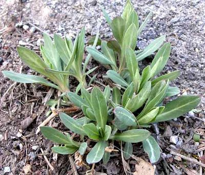

Ayuntamiento de Senés
JARDIN BOTANICO DE ESPECIES AUTOCTONAS DE SENES

Silene vulgaris

La colleja (Silene vulgaris) es una planta herbácea perenne característica del ecosistema mediterráneo, ampliamente distribuida en zonas abiertas, campos y terrenos de cultivo. Presenta un crecimiento adaptado a suelos bien drenados y condiciones de alta insolación, siendo frecuente en ambientes rurales.
Sus tallos son delgados y erectos, pudiendo alcanzar entre 20 y 60 cm de altura. Sus hojas son lanceoladas, de color verde azulado, y de textura tierna. Durante la floración, produce flores blancas con un cáliz inflado muy característico, que le confiere un aspecto distintivo y facilita su identificación en el campo.
La colleja se distribuye ampliamente por la región mediterránea y otras zonas templadas de Europa, donde crece de forma natural en campos, laderas, cunetas y terrenos agrícolas. Prefiere suelos bien drenados y soleados, adaptándose con facilidad a condiciones de escasa humedad.
La colleja posee propiedades nutritivas y ha sido tradicionalmente utilizada como planta comestible. Sus hojas tiernas son ricas en vitaminas y minerales, siendo empleadas en la alimentación como ingrediente en diversos platos tradicionales.
La colleja simboliza la sencillez y la tradición rural, al estar estrechamente ligada a la vida campesina y al aprovechamiento de recursos naturales. Representa el conocimiento popular sobre plantas silvestres comestibles.
En Senés, la colleja ha sido una planta muy valorada en la cocina para diversas recetas, cruda cocida y frita en tortilla, o bien en revoltillo, siempre los tallos tiernos que son los mas sabrosos.
Para la salud, se utilizaba para purificar la sangre y rompían las piedras de la vías urinarias y así facilitaban su expulsión.
La colleja florece principalmente en primavera, coincidiendo con su mejor momento para el consumo. Durante este periodo, sus flores blancas destacan en el paisaje y contribuyen a la biodiversidad del entorno.
El cáliz inflado de sus flores es una de sus características más distintivas y ha dado lugar a diferentes nombres populares. Además, es una de las plantas silvestres más utilizadas en la gastronomía tradicional mediterránea.